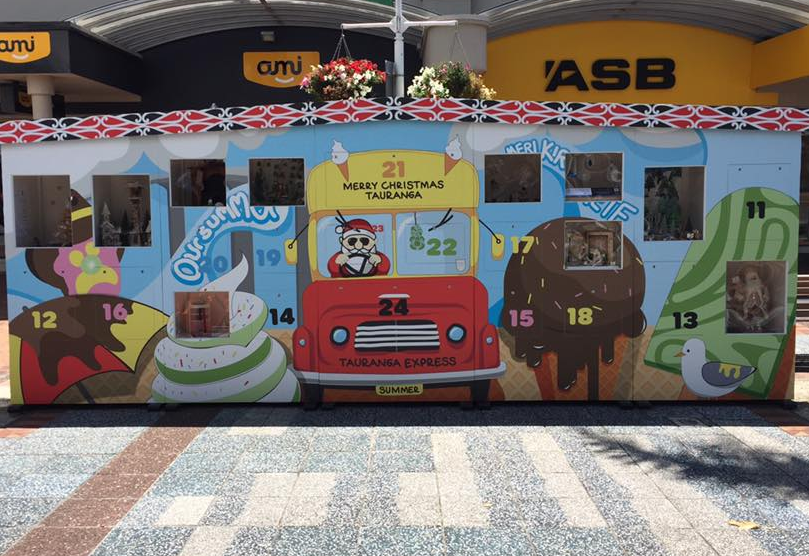

Advent Calender
This is a 6m x 2.4m high advent calendar designed and built for Downtown Tauranga and Tauranga City Council to take a prominent position in the city center for the run down of Christmas 2018.
The brain child of the Tuskany Agency Team, the calender has to be designed to fulfill several functions. Primarily it was a festive display piece which meant building it in five sections for transport and storage, but it also had to have the traditional design of an advent calender with 24 windows for the countdown of Christmas Eve.
The materials and construction had to tolerate the weather conditions which varied between torrential rain and thirty degree heat for six weeks while protecting the window displays.
The doors are lockable and one removed each day to reveal a festive scene, some designed professionally, some by local groups and artists from the community. The displays are viewed through a perspex screen fitted behind each of the doors.
Once designed and built, the calender had low voltage lighting installed to light each display at night as they were revealed and then finally vinyl wrapped.
This was a great project to work on, and each year the displays will be designed by different community groups, schools, chairty's, artists, etc to take the opportunity to have a window to showcase their talents and make festive scenes. A new vinyl Christmas wrap each year completes an ever evolving, interactive Christmas decoration.